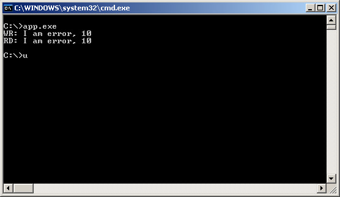
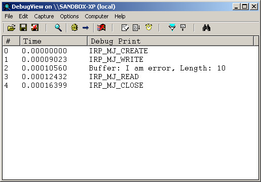

Steward
分享是一種喜悅、更是一種幸福
驅動程式 - Kernel Mode Driver Framework (KMDF) - 使用範例 - Pascal (DDDK) - PNP - Handle File IRP - Choose WdfDeviceIoBuffered
參考資訊：
https://wasm.in/
http://four-f.narod.ru/
https://github.com/steward-fu/ddk
main.pas
unit main;
interface
uses
DDDK;
const
DEV_NAME = '\Device\MyDriver';
SYM_NAME = '\DosDevices\MyDriver';
function __DriverEntry(pMyDriver : PDRIVER_OBJECT; pMyRegistry : PUNICODE_STRING) : NTSTATUS; stdcall;
implementation
var
szBuffer : array[0..255] of char;
procedure IrpFileCreate(myDevice : WDFDEVICE; myRequest : WDFREQUEST; myFileObject : WDFFILEOBJECT); stdcall;
begin
DbgPrint('IRP_MJ_CREATE', []);
WdfRequestComplete(myRequest, STATUS_SUCCESS);
end;
procedure IrpFileClose(myFileObject : WDFFILEOBJECT); stdcall;
begin
DbgPrint('IRP_MJ_CLOSE', []);
end;
procedure IrpRead(myQueue : WDFQUEUE; myRequest : WDFREQUEST; myLen : ULONG); stdcall;
var
len : ULONG;
mem : WDFMEMORY;
begin
DbgPrint('IRP_MJ_READ', []);
len := strlen(@szBuffer);
WdfRequestRetrieveOutputMemory(myRequest, @mem);
WdfMemoryCopyFromBuffer(mem, 0, @szBuffer, len);
WdfRequestCompleteWithInformation(myRequest, STATUS_SUCCESS, len);
end;
procedure IrpWrite(myQueue : WDFQUEUE; myRequest : WDFREQUEST; myLen : ULONG); stdcall;
var
mem : WDFMEMORY;
begin
DbgPrint('IRP_MJ_WRITE', []);
WdfRequestRetrieveInputMemory(myRequest, @mem);
WdfMemoryCopyToBuffer(mem, 0, @szBuffer, myLen);
DbgPrint('Buffer: %s, Length:%d', [szBuffer, myLen]);
WdfRequestCompleteWithInformation(myRequest, STATUS_SUCCESS, myLen);
end;
function AddDevice(pMyDriver : WDFDRIVER; pMyDeviceInit : PWDFDEVICE_INIT) : NTSTATUS; stdcall;
var
device : WDFDEVICE;
io_cfg : WDF_IO_QUEUE_CONFIG;
file_cfg : WDF_FILEOBJECT_CONFIG;
szDevName : UNICODE_STRING;
szSymName : UNICODE_STRING;
begin
WdfDeviceInitSetIoType(pMyDeviceInit, WdfDeviceIoBuffered);
WDF_FILEOBJECT_CONFIG_INIT(@file_cfg, @IrpFileCreate, @IrpFileClose, Nil);
WdfDeviceInitSetFileObjectConfig(pMyDeviceInit, @file_cfg, WDF_NO_OBJECT_ATTRIBUTES);
RtlInitUnicodeString(@szDevName, DEV_NAME);
RtlInitUnicodeString(@szSymName, SYM_NAME);
WdfDeviceInitAssignName(pMyDeviceInit, @szDevName);
WdfDeviceCreate(@pMyDeviceInit, WDF_NO_OBJECT_ATTRIBUTES, @device);
WdfDeviceCreateSymbolicLink(device, @szSymName);
WDF_IO_QUEUE_CONFIG_INIT_DEFAULT_QUEUE(@io_cfg, WdfIoQueueDispatchSequential);
io_cfg.EvtIoRead := @IrpRead;
io_cfg.EvtIoWrite := @IrpWrite;
Result := WdfIoQueueCreate(device, @io_cfg, WDF_NO_OBJECT_ATTRIBUTES, WDF_NO_HANDLE);
end;
function __DriverEntry(pMyDriver : PDRIVER_OBJECT; pMyRegistry : PUNICODE_STRING) : NTSTATUS; stdcall;
var
config : WDF_DRIVER_CONFIG;
begin
WDF_DRIVER_CONFIG_INIT(@config, AddDevice);
WdfDriverCreate(pMyDriver, pMyRegistry, WDF_NO_OBJECT_ATTRIBUTES, @config, WDF_NO_HANDLE);
Result := STATUS_SUCCESS;
end;
end.
完成

